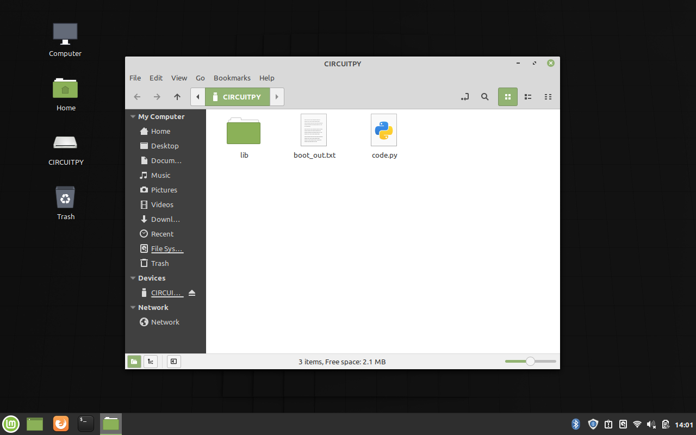
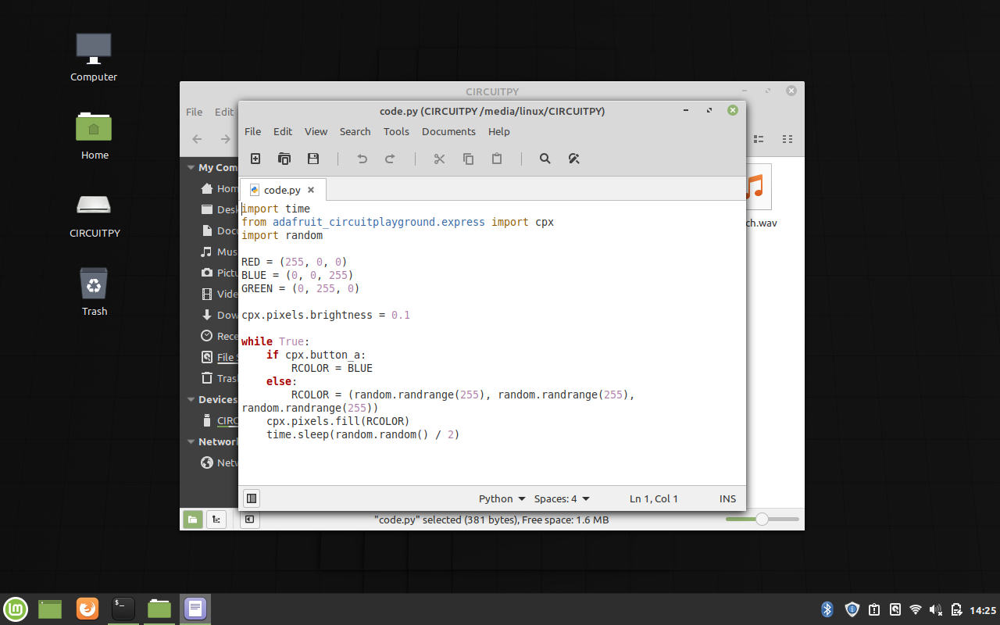

Circuit Playground Express
Computers come in all shapes and sizes. The Circuit Playground Express (CPX) is a "microprocessor," a computer that, compared with a full computer, is somewhat reduced in its features, speed, or performance.
We're going to be using a laptop computer to program the CPX, which can then run the program on its own.
You'll have a number of different options to experiment with in programming your CPX.
Let's get started!
Flash Drives and Text Editors
Take a CPX and plug in the USB cable between the device and a USB-A port on the MacBook Pro computer running LinuxMint. When you plug the device in, it will probably start flashing some of its LED lights—it's using the power from your computer to run the last program that was installed on it.
Your computer screen will look something like this:
The CPX appears as flash drive on the Desktop as a disk called "CIRCUITPY," and the files located on that device are listed in the window that opened.
The CPX can only hold a single program at a time, and the file for that program is called code.py.
Double-click on the code.py program and LinuxMint will launch the xed text editor, which is what we'll use to write our program.
Any changes made to this file, when saved to the CPX, will automatically start running on that device.
The CircuitPython language
The CPX runs a variant of Python called CircuitPython, which is a small programming language that makes use of the Python syntax. If you've programmed in Python before you'll recognize the format of CircuitPython statements.
- def function():
- x = 7
- if, if-else, if-elif-else
- for i in range(x):
- while x > 10:
You'll be entering and manipulating code today to see how it works on the CPX!
The CPX Input/Output interface
If you've got a CPX in front of you, you may have already noticed, there's no keyboard and no screen! The CPX gets its input from various sensors and input ports that are on the device itself, including a slider switch and two buttons. We'll see how those work today.
Output for today will consist of a red LED light and ten "neopixels"—powerful, programmable LED lights that encircle the CPX.
For the CPX to be able to run programs, it also needs some libraries that are imported so we can interact with the CPX's buttons, sensors, lights, etc.
Projects
Pick projects, put the code into your text editor, and upload it to the Circuit Playground to see what happens when it runs. Then change the code, upload it again, and see how the program works differently!
- Demo - ColorCycle [Download]
This program demonstrates the NeoPixels and shows how they can produce some interesting effects. - Project - Halloween [Download]
This program produces random lightning flashes, and plays the sound of a scary witch laughing if the device is bumped or disturbed. Spooky! - Project - Tug of War [Download]
This program allows two users, Button A/Red and Button B/Blue, to play a digital tug-of-war. Wait until the red LED lights up, then be the first to push your button. If you go too early, you'll get penalized!